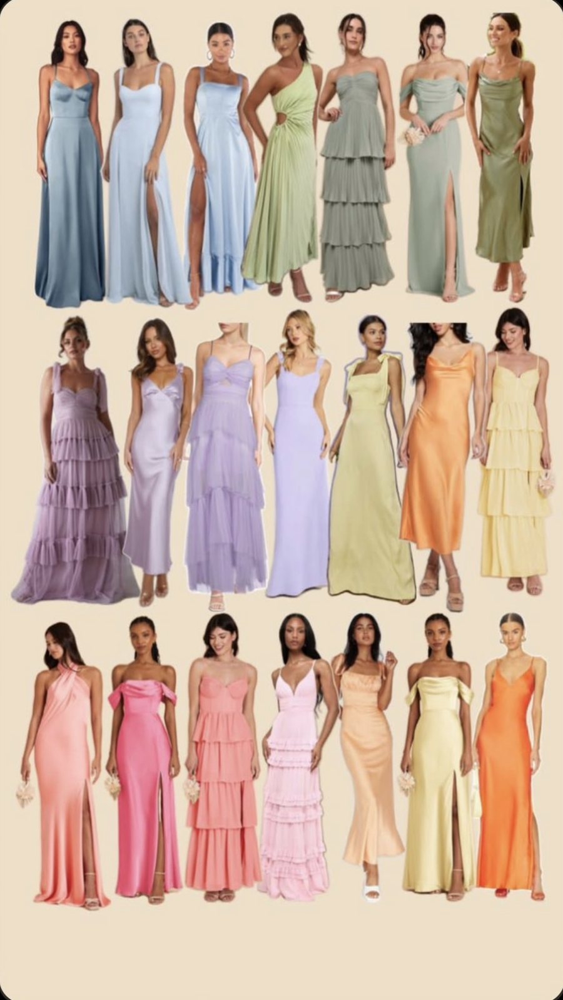
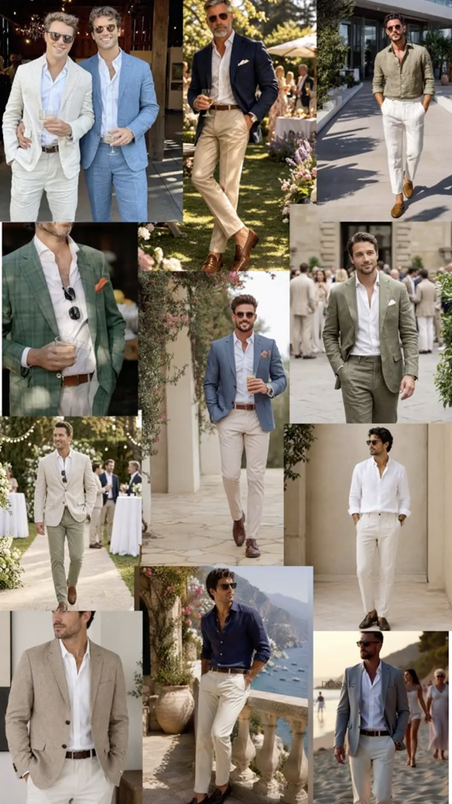

Cómo vestir
Lino, tonos claros, nada pesado. Una tarde en la costa italiana, pero en la Sabana de Bogotá.
Para que te hagas una idea
Vestido midi o largo, en tonos pastel. Telas ligeras: satín, chiffón o lino. Estampado floral suave también funciona muy bien.

Toca un color y verás ideas en ese tono.
Más ideas en PinterestLino o algodón liviano, en tonos tierra o claros. Camisa sin corbata. El blazer es bienvenido y, por lo que decíamos arriba, además conviene.

Toca un color y verás ideas en ese tono.
Más ideas en Pinterest
El blanco lo dejamos para la novia y
el negro lo dejamos para otro día.
De resto, la paleta es una guía y no una ley. Si tu color favorito no está
en esos círculos, ven con él. Preferimos verte cómodo que verte combinado.
Lo aprendimos organizando esto, y preferimos contártelo.